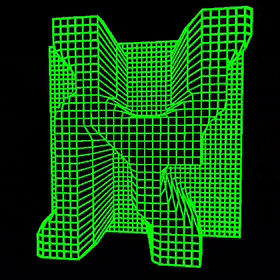
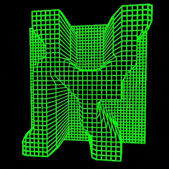

Having a strong passion for typography, I have explored the versatility of Hebrew typography within different contexts and rules by designing a various fonts and art with the script. The works are heavily influenced by various cultural aspects, movie genres, design movements, and other forms of artistic expression.
A font inspired by old role-playing games in aim to imagine how it would have looked like in Hebrew displayed on old-school hardware.

Galit is the amalgamation of my love for the Bauhaus style, Hebrew typography and 3D modelling. This is the first font in Hebrew presented and rendered in 3D.
 
